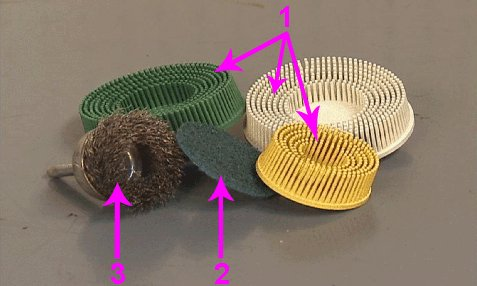
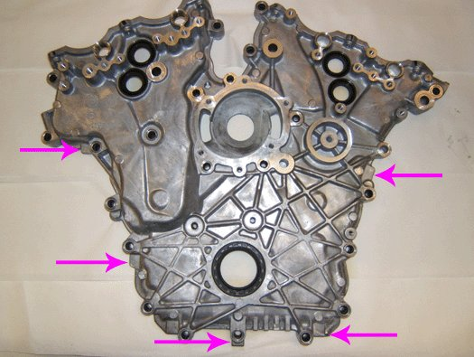

Engine - Repairing Engine Front Cover Oil Leak: Overview
INFORMATIONBulletin No.: 12-06-01-003
Date: May 03, 2012
Subject: Information for Repairing Engine Front Cover Oil Leak, Sealing Surfaces Preparation, Applying Room Temperature Vulcanizing (RTV) Sealant
Models:
2006-2007 Buick Rendezvous
2006-2009 Buick Allure (Canada)
2006-2012 Buick LaCrosse
2008-2012 Buick Enclave
2009-2012 Buick Enclave (Middle East)
2010-2012 Buick Enclave (China)
2010-2012 Buick LaCrosse (Canada)
2006-2011 Cadillac STS
2006-2012 Cadillac CTS, SRX
2010-2012 Cadillac CTS (China)
2006-2012 Chevrolet Equinox, Malibu
2008-2012 Chevrolet Captiva Sport
2009-2012 Chevrolet Traverse
2009-2012 Chevrolet Traverse (Middle East)
2010-2012 Chevrolet Traverse (China)
2010-2012 Chevrolet Camaro
2011-2012 Chevrolet Caprice PPV
2007-2012 GMC Acadia
2009-2012 GMC Acadia (Middle East)
2010-2012 GMC Acadia (China)
2010-2012 GMC Terrain
2006-2009 Pontiac Torrent
2006-2010 Pontiac G6
2008-2010 Pontiac G8
2006-2010 Saturn VUE
2007-2010 Saturn OUTLOOK
2009-2010 Saturn OUTLOOK (Middle East)
2010-2012 Saturn OUTLOOK (China)
Equipped with Engine RPO LAU, LF1, LFW, LFX, LLT, LP1 or LY7
Abrasive Pads - Bristle Discs - Surface Conditioning Discs - Wire Wheels

Notice
DO NOT use bristle discs (1), abrasive pads (2), wire wheels (3) or surface conditioning discs to clean the sealing surfaces of engine components.
Abrasive pads and bristle discs are embedded with abrasive material. The bristle discs wear down as they clean, continually exposing fresh abrasive to the surface of the component. These types of devices should not be used because they produce a very fine grit that the oil filter is unable to remove from the oil. THIS GRIT IS ABRASIVE AND IS KNOWN TO CAUSE INTERNAL ENGINE DAMAGE.
- Abrasive pads, wire wheels and bristle discs can remove enough metal to affect the engine front cover, cylinder head, engine block, oil pan rail, and intake manifold runner surface flatness, which can then result in engine coolant leaks, engine oil leaks and air leaks. It takes about 15 seconds to remove 0.203 mm (0.008 in) of metal with an abrasive pad.
- Abrasive pads, wire wheels and bristle discs used with high speed grinders produce airborne debris that can travel throughout the shop contaminating other work being performed outside of the immediate work area.
- When cleaning engine gasket sealing surfaces and/or cleaning parts from an engine that are to be reused, surface conditioning discs, typically constructed of woven fiber or molded bristles that contain abrasives, such as a high amount of Aluminum Oxide, should also NOT be used. The use of such surface conditioning discs dislodges Aluminum Oxide from the disk and metal component particles, which can lead to premature engine bearing failure. The presence of Aluminum Oxide in engine oil has been shown to cause premature engine bearing failure. In some cases, this failure occurs in as little as 2,200 km (1,000 mi) or less after the repair has been made.
- Surface conditioning discs may grind the component material and embed it into the disc. This can result when more aggressive grinding of the gasket surface takes place.
Separating Components That Use Room Temperature Vulcanizing (RTV) Sealant

- Use the incorporated pry points to separate the engine front cover from the engine block.
- The pry points are positioned so other vital engine components are not damaged when the pry points are used.
- Do not try to separate RTV sealed components by prying against other engine components.

Disclaimer